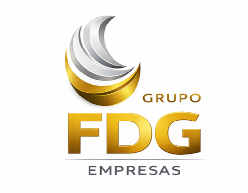
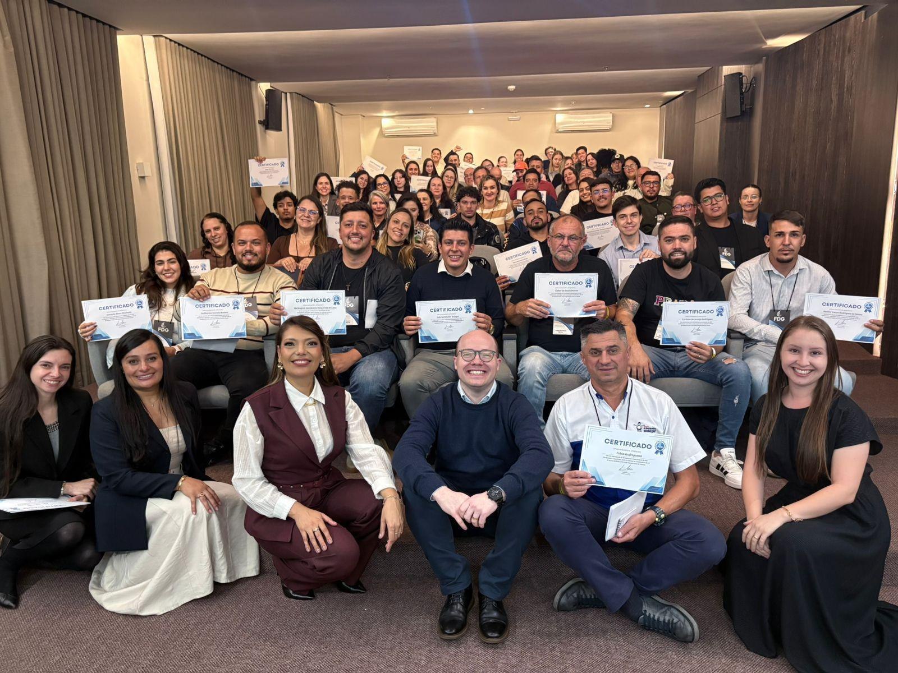
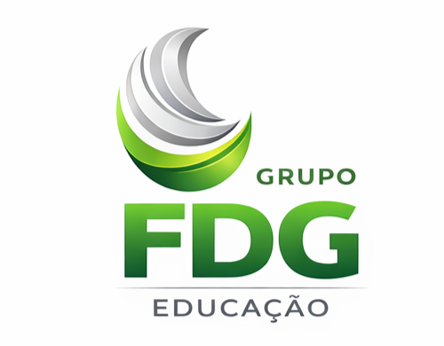
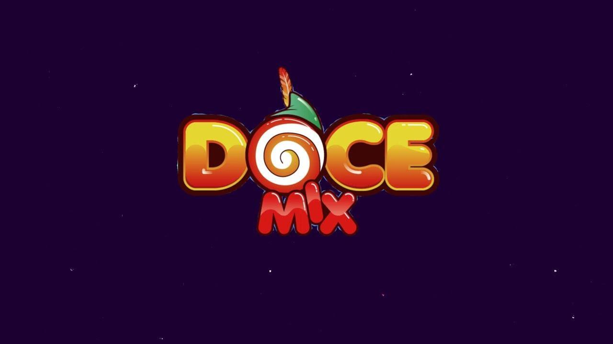
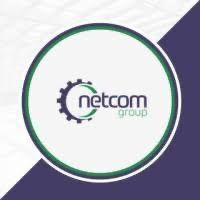
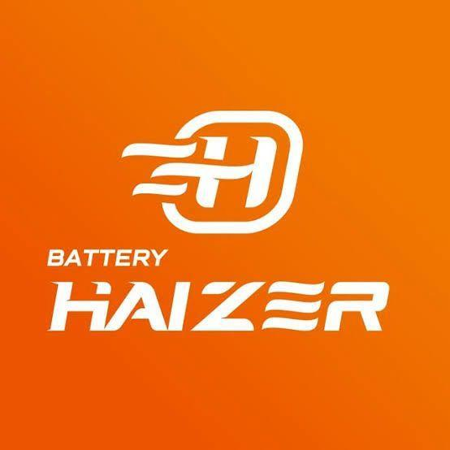

Liderança · Pessoas · ResultadosFDG Empresas
Desenvolvemos líderes, fortalecemos equipes e transformamos ambientes organizacionais.
Soluções para sua empresa
Acreditamos no desenvolvimento humano com base, método e propósito. Conectamos princípios, experiências e aplicação prática para transformar pessoas, ambientes e gerações.
12 princípios. Um método próprio. Um propósito maior.O Grupo FDG trabalha com desenvolvimento humano aplicado, oferecendo palestras, treinamentos, imersões, programas e jornadas para organizações, lideranças, colaboradores, educadores, jovens, pais e famílias.
Uma metodologia própria, uma rede multidisciplinar e atividades práticas orientam a proposta de desenvolvimento.
FDG Empresas e FDG Educação — Vida & Família são núcleos de atuação da mesma marca institucional.

Liderança · Pessoas · ResultadosDesenvolvemos líderes, fortalecemos equipes e transformamos ambientes organizacionais.
Soluções para sua empresa
Educação · Vida · FamíliaFortalecendo educadores, jovens e famílias para transformar gerações.
Soluções para a vidaUma jornada de desenvolvimento humano que conecta compreensão, experiência e aplicação.
Compreendemos a realidade, as necessidades e os desafios de cada grupo.
Experiências e atividades conduzidas por profissionais especializados.
O conhecimento se transforma em comportamentos e práticas do dia a dia.
Avaliação da evolução e continuidade do desenvolvimento.







Conte o seu desafio. Vamos construir uma solução para o seu contexto.